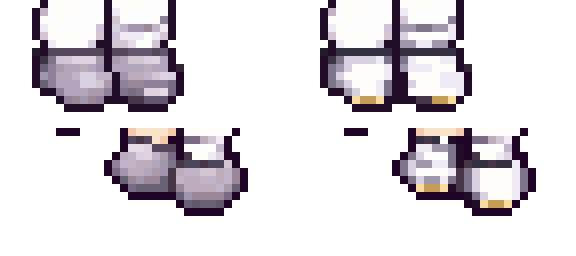

LITTLE GARDEN · CHARACTER STUDY
홍련2 V2 · 앉기 4방향
부츠 디테일 보완 · 자세와 외곽선 유지승인한 V2의 갈색 눈과 보라색 장비를 살리고, 앞·뒤 앉기 베이스에 몸의 비율과 발 높이를 맞췄어요.
공통 앉기 베이스
몸에 모은 팔, 접힌 무릎과 가까운 발을 참고했어요.
서 있는 홍련2
확인한 정지 모습은 그대로 유지해요.
앉은 홍련2
V2 머리·갓을 재사용하고, 허리부터 부츠까지 이어진 앉은 몸을 정리했어요.
앉은 자세 모아보기
앞오른쪽 ↘
앞왼쪽 ↙
뒤오른쪽 ↗
뒤왼쪽 ↖
부츠 디테일 보완

왼쪽: 수정 전 / 오른쪽: 수정 후. 흰 앞코·발목 띠·주름·금색 테두리를 보완했어요.
왼쪽 두 방향은 각각 전체 반전이에요. 지금은 앉기 그림을 확인하는 단계이며, 실제 기구에서의 앉는 높이와 게임 연결은 이후에 맞출 예정이에요.
제작 방법
기존 앉기 생성 초안의 몸통·골반·다리를 하나의 이어진 그림으로 맞추고, 승인 V2 머리와 64색 팔레트를 재사용했어요. 베이스의 다리를 따로 잘라 붙이지 않았어요.